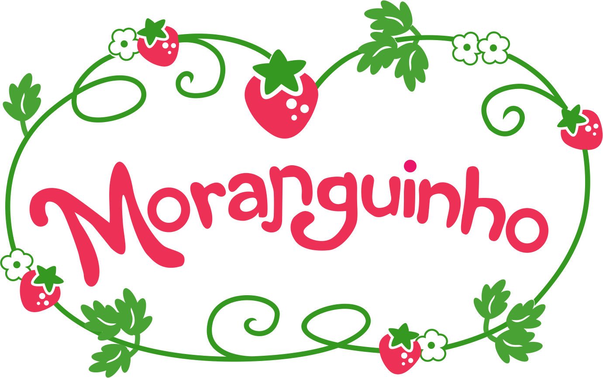
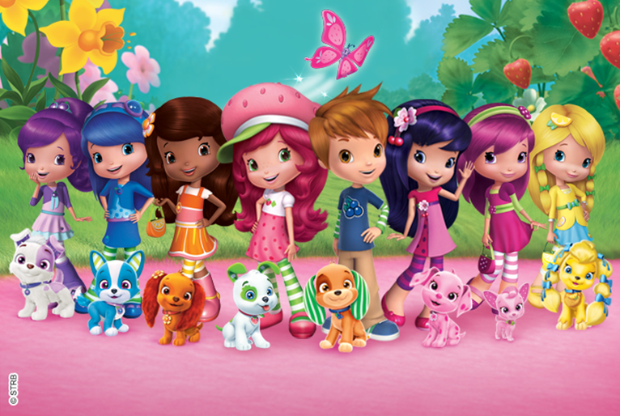

Moranguinho é uma menina que vive no mundo de Morangolândia, onde tudo é feito de morangos . Ela mora junto com sua irmã Maçãzinha e seus animais Pudim e Rocambole, e tem como melhores amigos Ameixinha , Amora Linda , Azedinha , Cachinho de Framboesa ,Cerejinha . Gotinha de Limão , Laranjinha , Maçãzinha , Mirtilo e Uvinha .

Moranguinho - Aventuras em Tutti-Frutti, é uma série derivada da aclamada série - Moranguinho, e se passa na fantasiosa e colorida comunidade de Berry Bitty. Como todas as outras comunidades, os cidadãos de Berry Bitty vivem e trabalham juntos para que a comunidade funcione. Eles têm empregos, administram empresas e ajudam uns aos outros a resolver problemas pessoais e da comunidade, assim como comemoram sucessos pessoais e conjuntos. E como todas as outras comunidades, eles têm que lidar com conflitos, mas o espírito de amizade sempre irá prevalecer sobre a cidade de Berry Bitty..
" A Moranguinho è um personagem super querida por mais de 40 anos e sentimos que era o momento certo de modernizar os personagens e as linhas da historias . Tivemos a ideia de levar esta no Moranguinho a toda uma nova geraçao de meninas com historias doces mostrando que as meninas podem fazer a diferemça no mundo " , conta Michael .
conheça os personagens